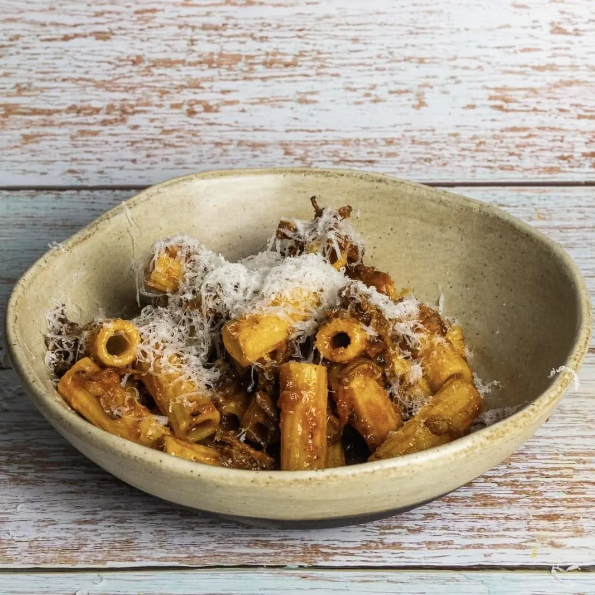

⏲ 40 minuts 👥 8/10 racions

Tornem a la pasta per proposar-vos tot un clàssic: el ragú, però adaptat al nostre gust. Es tractat
d'una espècie d'estofat amb salsa de tomàquet, similar al que molts coneixeu com a salsa napolitana,
però feta amb carns que necessiten coccions llargues. Veureu que la potència d'aquesta salsa us farà
voler repetir: en podeu fer tirades llargues i congelar-la!
Ingredients:
- 400g de carn magra de vedella
- 400g de carn magra de porc
- 400g de tomàquets sencers
- 400g de passata de tomàquet (o tomàquet concentrat + tomàquet triturat)
- 300ml de vi negre
- 4 cebes
- 3 pastanagues
- 2 branques d'api
- All
- Alfàbrega
- Parmesà
- 1kg de pasta
- Oli, sal i pebre
- Marquem la carn en una cassola o olla amb oli, i també daurem l'all laminat o picat (al gust, però sense por).
- Afegim les cebes, la pastanaga i l'all picats a la brunesa i sofregim una bona estona. Aixequem els sucres amb el vi, i deixem que evapori l'alcohol i s'hi cogui una estona.
- Afegim tot el tomàquet, en cru, passata, concentrat i/o triturat. Sofregim uns minuts i acabem de cobrir amb aigua. Coem durant 4/6 hores amb una olla convencional, o 1:30 hores en una olla exprés.
- Esfilagarsem la carn perquè s'integri totalment amb la salsa: si ha cuit prou, es desfarà sense problema. Si cal, després d'obrir l'olla de pressió, podem deixar reduir la recepta una estona més. Posem a punt de sal i pebre, i podem afegir alfàbrega fresca o seca.
- Coem la pasta seguint les indicacions del fabricant, la mesclem amb el ragú i acabem ratllant parmesà sense por.